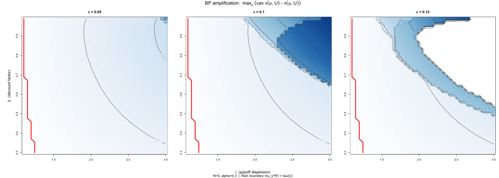

Parâmetros fixos: N=5, α=0.3, c=0.05 (baixo, para
que o screening jump seja visível em E_U)
Figura

BP amplification heatmap
Leitura
Eixo x: r (dispersão de payoffs entre tipos). Maior
r → mais a ganhar com screening.
Eixo y: β (fator de desconto). Maior β → R2 threat
mais crível → screening mais efetivo.
Cor: max BP amplification = max_μ [cav v(μ, U) -
v(μ, U)]. Azul escuro = BP contribui mais.
Linha vermelha: fronteira onde BP amplification se
torna positiva. Abaixo/esquerda: BP amp = 0 (screening jump invisível ou
inexistente).
Contornos cinza: curvas de nível.
Padrões
BP cresce monotonicamente com r e β — quanto maior
a dispersão de payoffs e a paciência, maior o jump de screening e mais
BP pode amplificar.
BP máximo = 0.456 em r=3.0, β=0.99 (canto superior
direito).
A fronteira vermelha mostra que para r baixo ou β
baixo, o screening jump existe mas é pequeno demais para que a
envoltória côncava se descole da função-valor.
Para r ≈ 1.1 (quase sem dispersão), BP amp ≈ 0 independente de β —
sem dispersão, não há screening.